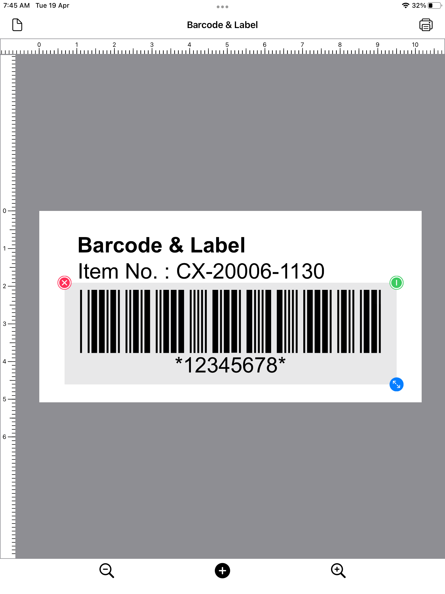

    <section class="mt-n11 pt-12 pb-8 pt-md-14 pb-md-11 bg-black bg-pattern-2">
          <div class="container text-white">
            <div class="row justify-content-center">
              <div class="col-12 col-md-10 col-lg-9 col-xl-8 text-left">

                <!-- Heading -->
                <h1 class="display-4">
                    SwiftUI WYSIWYG Draw Project
                </h1>
             
                <p>
                This project explores the use of SwiftUI for developing a What-You-See-Is-What-You-Get (WYSIWYG) vector drawing app. A WYSIWYG vector drawing app can be thought of as one that renders different objects such as a rectangle, an ellipse, a text, or other shapes on a canvas; the moving of objects around a canvas by dragging; and changing object properties by tapping on objects.
                </p>
                
                <p>
                <a href="https://github.com/Misfits-Rebels-Outcasts/SwiftUI-WYSIWYG-Draw" class="btn btn-info lift" rel="nofollow">
                  Github Project <i class="fe fe-arrow-right ms-2"></i>
                </a>
                </p>
                
                <figure class="figure mb-7">

                  

      
                  <figcaption class="figure-caption text-center">
                    Photo Draw with SwiftUI WYSIWYG.
                  </figcaption>

                </figure>
                <h3 class="fw-bold">
                    Why use SwiftUI View as the drawing canvas?
                </h3>
                
                <p>
                When developing a vector drawing app in the Apple ecosystem, things that come immediately onto the mind are Core Graphics or SwiftUI Canvas. Both are extremely fast, easy to use, and provide a canvas for us to draw on. Naturally, both are good choices as the canvas of a drawing app. However, when the drawing app requires WYSIWYG behavior, a Swift developer realizes that handling of object interactions such as drag, move, and resize, requires the use of Apple's Gestures and Events.
                </p>
                <p>
                This makes it hard for a Swift developer to ignore the use of a SwiftUI View as the "Drawing Canvas". This is because all Apple's Gestures and Events are directly supported by a SwiftUI View. If one is to take a step back and think about it, a SwiftUI View is designed by Apple for User Interface (UI) development, and such a View already naturally supports all the behavior required by a WYSIWYG app: rendering views and objects, and supporting gestures and events. The use of a SwiftUI View as the "Drawing Canvas" also does not prevent us from using Core Graphics, SwiftUI Canvas, or even Metal for rendering the underlying object that requires special treatment, as all three can be represented as a SwiftUI View easily.
                </p>
            
              </div>
            </div> <!-- / .row -->
          </div> <!-- / .container -->
        </section>
